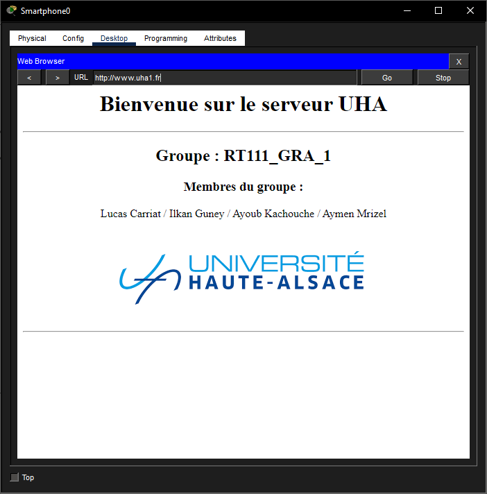

SAE 1.03 : Installation & Mesures
Du Câblage Physique à la Simulation Logique
Ce projet transversal m'a permis de maîtriser la chaîne complète d'une infrastructure réseau : réalisation de la connectique, analyse de la couverture Wi-Fi sur le terrain et simulation d'une architecture complexe sous Packet Tracer.
🖥️ Architecture Logique & Services
Simulation complète de l'infrastructure réseau (Figure 5)
Configuration Réalisée
- Routage : Routeur 2811 assurant l'interconnexion des 3 zones.
- Administration : Contrôleur WLC pour la gestion centralisée des bornes Wi-Fi.
- Services : Serveurs DNS et Web fonctionnels.
✅ Preuve de Service
Accès réussi au site "uha1.fr" (Figure 6)
📡 Audit Wi-Fi & Rapport Complet
Contenu du Rapport
Une analyse approfondie de la couverture sans-fil des bâtiments de l'IUT a été réalisée via le logiciel Acrylic Wi-Fi.
- Cartographie (Heatmaps) : Visualisation des zones blanches et des interférences sur les bandes 2.4 GHz et 5 GHz.
- Mesures Physiques : Calculs d'atténuation des matériaux (Placo vs Béton) et analyse des débits descendants.
Rapport Technique SAE 1.03
Document PDF (15 Pages) incluant schémas de câblage, mesures PoE et toutes les heatmaps.
📥 Télécharger le Rapport🔌 Infrastructure Physique & PoE
Câblage Structuré
Réalisation manuelle de câbles droits Catégorie 7 respectant la norme TIA-568B.
Sertissage de connecteurs RJ45 mâles et montage de noyaux femelles pour plastron mural.
Analyse PoE
Mesures sur un Switch Cisco Catalyst 2960.
- Tension mesurée : 54 V
- Puissance consommée (AP) : 13 W
- Calcul d'intensité : \( I = 0.24 A \)
Matériel Utilisé
- Cisco AIR-AP1231G (Borne Wi-Fi)
- Switch Cisco WS-C2960
- Analyseur de spectre Wi-Fi